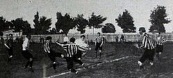
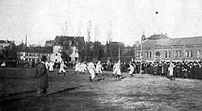
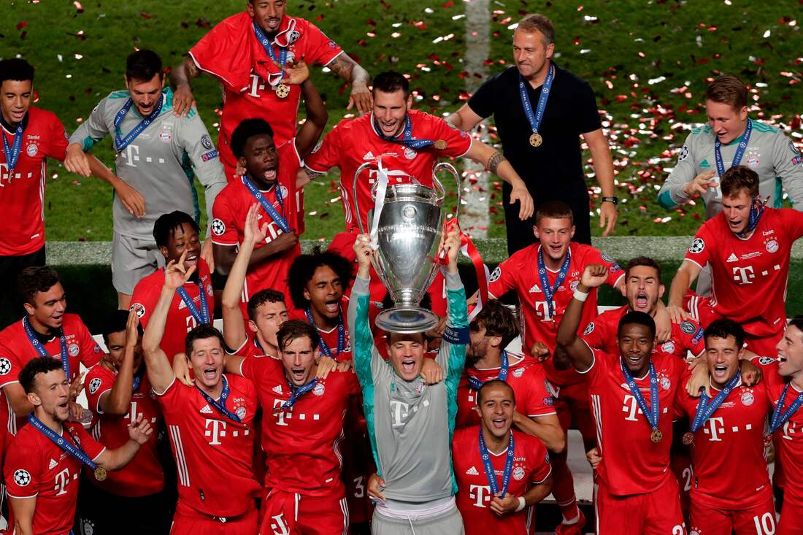

Franz John, jugador del MTV 1879 y diez de sus compañeros, cansados de las condiciones en las que tenían que jugar, se reunieron aquel día para rescindirse de su equipo. El club que crearon se llamó F. C. Bayern. Años más tarde cambiarían el nombre por el de FC Bayern de Múnich, mundialmente conocido como los "bávaros". Los comensales que en la noche del 27 de febrero de 1900 cenaban en el restaurante Gisela de Múnich no podían sospechar que en aquel momento, en una de las mesas junto a ellos, se estaba gestando el nacimiento del mejor equipo de Alemania y uno de los más grandes de Europa. Cuando Alemania consiguió la Copa Mundial de Fútbol de 1954 la tendencia se invirtió radicalmente y el fútbol se convirtió en el deporte más popular del país, "la apasionadora Alemana" había nacido. En 1963 se creó la liga alemana, la Bundesliga, pero el equipo bávaro no fue invitado a jugarla, su primer año en la liga coincidió con la llegada de un joven jugador llamado "Franz Beckenbauer" que recientemente había abandonado su club, el TSV 1860 Múnich tras una discusión con los directivos. En el Bayern de Múnich ya jugaba un joven portero llamado Sepp Maier y en la delantera un joven al que el entrenador llamaba el "molinero gordito", Gerd Müller. Años después ese sobrenombre sería sustituido por otro, que el mundo conoció años después como "Torpedo Muller", en su primer año en la Bundesliga, la temporada 1965/1966 el club consiguió su primer título, dando inició la conquista de títulos en Europa.
El fútbol alemán necesitó un tiempo para arrancar después de un periodo de necesidad y catástrofes. Tardó nueve años en volver a calar entre las masas, al volver la selección nacional triunfal del Campeonato del Mundo disputado en la vecina Suiza. El equipo de Sepp Herberger ganó allí su primer título mundial, aunque la final contra Hungría fuese una amarga experiencia para Jakob Streite, el cerebro de los bávaros. El hasta entonces 15 veces internacional tuvo que ver el partido desde la grada. Un partido de la selección alemana sin ningún jugador del Bayern se convirtió después en una algo poco usual. En 1957 ganaron los “rojos” por primera vez la copa ante 42000 espectadores en el estadio Augsburger Rosenaustadion. Jobst marcó el definitivo 1 a 0 contra el Fortuna Düsseldorf. Después vino un pequeño periodo de sequía: los bávaros, con su presidente, el constructor Wilhelm Neudecker a la cabeza, tuvieron que pasar por el mal trago de no poder participar en la recién creada Bundesliga. Dos años más tarde el Bayern consiguió ascender a la división superior, bajo el mando del entrenador Tschik Cajkovski, muerto en 1988. Empezó un desarrollo sorprendente del Bayern: porque el cronista se topó por primera vez con el nombre de Franz Beckenbauer y porque aparecieron por primera vez nombres importantes en la historia del Bayern. Cajkovski alineó por primera vez a Franz en un partido de la ronda de ascenso. Detrás de él había un tal Sepp Maier defendiendo la portería, y delante un joven delantero llamado Gerd Müller. Cajkovski le puso el apodo cariñoso de “pequeño gordo Müller”. Este fue el eje que llevó a la fama mundial al FC Bayern. Tuvieron un exitoso comienzo en la Bundesliga, logrando el tercer puesto en su primer año (1965/66). Como recompensa Beckenbauer y Maier acompañaron a la selección alemana a Inglaterra, donde Alemania sólo perdió en la final contra el equipo local. No fue un año sin títulos, ya que antes del Campeonato mundial el FC Bayern había ganado su segunda copa por 4 a 2 ante el Meidericher SV. Brenninger por dos veces, Ohlhauser y Beckenbauer marcaron en la final de Frankfurt ante 60000 espectadores. Un año más tarde, en 1967, llegó el primer título europeo. Poco después de conquistar la tercera copa por 4 a 0 ante el Hamburger SV, lograron el doblete: Franz “Toro” Roth, que siempre marcaba en los partidos importante, por lo cual se ganó el apodo de “Mister Copa de Europa”, marcó en el minuto 109 de la final de la Recopa de Europa ante el Glasgow Rangers.
En 1968 hubo una ruptura. Branco Zebec sustituyó a Cajkovski y prohibió el consumo de cerveza en el Bayern. Eso no podía funcionar, comentaban recelosos los expertos, los aficionados no deben sufrir por la falta de victorias. Pero esa vez funcionó y se consiguió el doblete; la liga con ocho puntos de ventaja sobre el segundo, Alemannia Aachen, y la copa ante el Schalke. Mientras tanto había surgido un equipo al que el Bayern durante estos años tuvo que batir, el Borussia Mönchengladbach. Los 'once potros' ganaron la liga en 1970 y 1971, relegando por dos veces al Bayern a la segunda plaza. Cuando en 1972, los muniqueses alcanzaron de nuevo el éxito, esta vez en el estadio olímpico y con un nuevo entrenador, Udo LAttek, hubo más de un motivo de alegría. Gerd müller alcanzó la cifra de 40 goles en liga, marcando un hito en la estadística del fútbol alemán. Además el equipo obtuvo 53 puntos y tan sólo perdió 13 (a 2 puntos por partido ganado), otro récord en la Bundesliga. Apenas sin esfuerzo, el equipo de Lattek se llevó la copaa Munich al vencer 2-1 al Colonia tras la prórroga. Con Lattek se consiguieron otras dos ligas y el máximo trofeo europeo, la copa de Europa, que el Bayern colocó en sus vitrinas en 1974. "Katsche" Schwarzenbeck empató el partido 1-1 a un minuto del final de la prórroga contra el Atlético de Madrid, lo que obligó a la repetición del partido. En la segunda ocasión vencieron Franz y compañía por 4-0, en Bruselas, con goles de Uli Hoeneß(2) y Gerd Müller(2). Ese mismo año la selección alemana se proclamó campeona del mundo, y la final se disputó contra Holanda en Múnich. Con 2-1 había sobre el terreno de juego seis jugadores del Bayern: Maier, Beckenbauer, Schwarzenbeck, Breitner, Hoeneß y Müller, dos de ellos anotaron los tantos, Breitner de penalti y Müller con un inolvidable disparo a media vuelta.